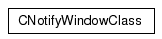
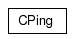
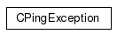
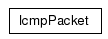
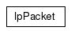
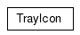

Main Page
Classes
Files
Class List
Class Hierarchy
Class Members
TrayAlive Graphical Class Hierarchy
Go to the textual class hierarchy






Generated on Tue Dec 19 23:49:24 2006 for TrayAlive by
1.4.6
 1.4.6
1.4.6